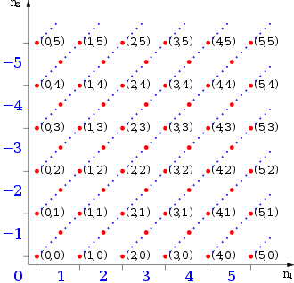

The Integers
It is known that whilst the equation x − 3 = 0 has solutions in ℕ, the equation x + 3 = 0 has not. We want to extend the set ℕ in a way to include solutions to equations of the form x + n = 0, n ∈ ℕ. We are led in this way to the intger set ℤ = {...,-3,-2,-1,0,1,2,3...}. To introduce negative intergers we'll use notions already introduced. We start from the cartesian product ℕ x ℕ, the set of all ordered pairs of natural numbers, with the following relation
(n,m) ρ (n',m') ⇐⇒ n + m' = m + n'
an equivalence relation. Two ordered couples (n,m) and (n',m') of integers are euqal if n + m' = m + n'. The set ℕ x ℕ is partitioned in classes (n,m).
thus the couples (1,0), (2,1), (3,2) on the same diagonal are equivalence classes (1 + 2 = 3 + 0) and represent the same integer 1. As representetive of each class it is possible to choose particular couples, thos in which one of the elements is zero. Geometrically, by those couple located on coordinate axis
(0,0)
(1,0), (2,0) (3,0), ..., (n,0)...
(0,1), (0,2) (0,3), ..., (0,n)...
The integers set defined as
ℤ := ℕ x ℕ /ρ
ℤ can be decomposed in the following subsets:
ℤ := ℤ+ ∪ {0} ∪ ℤ-
where
ℤ+ := {(n,0) | n ∈ ℕ, n ≠0},
0 := (0,0),
ℤ- := {(0,n) | n ∈ ℕ, n ≠0}
The elements of ℤ+ are named positive integers, the one of ℤ- negative integers.
L'insieme ℤ è un'estensione di ℕ, nel senso che ontiene al suo interno un sottoinsieme ℤ+ ∪ {0} identificabile con ℕ mediante l'applicazione iniettiva da ℕ in ℤ che associa ad ogni naturale n la classe (n,0)|. Nell'insieme ℤ si possono definire un'operazione di addizione e una di moltiplicazoine al modo seguente:
(n,m) + (n',m') := (n+n',m+m')
(n,m) ⋅ (n',m') := (nn'+mm', n'm+nm')
Remarks
Tali operazioni sono ben poste, nel senso che, pur essendo definite attraverso i rappresentanti delle classi, non dipendono dalla scelta di tali rappresentanti.
From now on we'll indicate the elements of ℤ in the following way:
(n,0) := n, (0,0) := 0, (0,n) := -n
ℤ rispetto alle due operazioni di addizione e moltiplicazione ora definite gode delle seguenti proprietà:
a + b = b + a, ∀a,b ∈ ℤ (Proprietà commutativa dell'addizione)
a ⋅ b = b ⋅ a, ∀ a,b ∈ ℤ (Proprietà commutativa della moltiplicazione)
(a + b) + c = a + (b + c), ∀a,b,c ∈ ℤ (Proprietà associativa dell'addizione)
(a ⋅ b) ⋅ c = a ⋅ (b ⋅ c), ∀ a,b,c ∈ ℤ, (Proprietà associativa della moltiplicazione)
there exists a unique element 0 ∈ ℤ such that a + 0 = 0 + a, ∀ ℤ (Esistenza dell'elemento neutro rispetto all'addizione)
per ogni a ∈ ℤ esiste un unico elemento -a, tale che a + (-a) = (-a) + a = 0 (esistenza dell'opposto)
there exists in ℤ a unique element, 1, such that a ⋅ 1 = 1 ⋅ a, ∀a ∈ ℤ (esistenza dell'elemento neutro rispetto alla moltipliczione)
a ⋅ (b + c) = a ⋅ b + a ⋅ c, (a + b) ⋅ c = a ⋅ c + b ⋅ c ∀ a,b,c ∈ ℤ (distributività della moltiplicazione rispetto all'addizione)
We anticipate that a set endowed with two binary operations verifying the axioms mentioned above is defiend as commutative ring with unit. Thus ℤ(+,⋅) is an example of commutative ring with unit; The ring E of all even integers is not a commutative ring with unit, in fact it does not contain a unit.
LEMMA 2.0. Let a, b elements of ℤ. Then
a ⋅ 0 = 0 ⋅ a = 0;
(-a) ⋅ b = -(a⋅b);
(-a) ⋅ (-b) = ab.
Proof
Risulta 0 + (a ⋅ 0) = a ⋅ 0 = a ⋅ (0+0) = a ⋅ 0 + a ⋅ 0, da cui a ⋅ 0 = 0.
0 = 0 ⋅ b = (a+(a)) ⋅ b = a ⋅ b + (-a) ⋅ b, da cui (-a) ⋅ b = -(a⋅b).
(-a) ⋅ (-b) = per (ii) = -(a(-b)) = -(-(ab)) = ab.□
Proposition 2.1. Let a and b two integers. Then ab = 0 if and only if a = 0 or b = 0.
Proof. Note that if a and b are both positive or both negatives, their product is always postive or negative (if they are both positives, rembember the definition of product in ℕ, if they are both negatives consider the (iii) in the above proposition). Se invece a> 0 and b < 0, then −b is positive, thus a(−b) = −ab is positive, and ab is negative. Quindi se ab = 0 deve necessariamente essere uno dei due fattori a o b nullo. Il viceversa è ovvio per la (i) del lemma precedente. □
Definition 2.2. It is defined as absolute value of an integer a the positive number:

Let a,b ∈ ℤ, the followin relations hold:
|a| + |b| > |a + b|; |a| ⋅ |b| = |a ⋅ b|